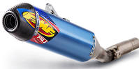
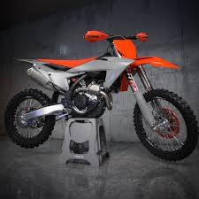
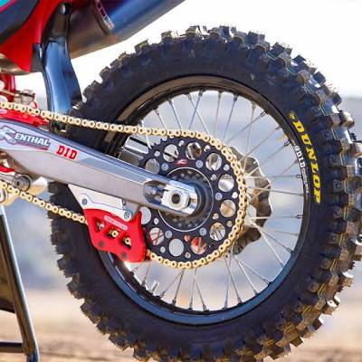

FMF: Escapes de alto rendimiento.
Akrapovič: Sistemas de escape premium.
Wiseco: Pistones y componentes internos.
Pro Circuit: Escapes y tuning de motor.

🎨 Plásticos y Protección
Acerbis: Plásticos y tanques grandes.
Polisport: Kits de carrocería duraderos.
UFO: Réplicas exactas de plásticos.
Cycra: Guardamanos y placas de protección

⛓️ Transmisión y Frenos
D.I.D: Cadenas de alta resistencia.
Brembo: Balatas y calipers premium.
JT Sprockets: Coronas y piñones duraderos.
Galfer: Discos de freno lobulados

🏁 Manubrios y Suspensión
Renthal: Manubrios y puños profesionales.
ProTaper: Puños y manubrios ergonómicos.
WP Suspension: Componentes de suspensión avanzados.
Öhlins: Amortiguadores de alta gama.